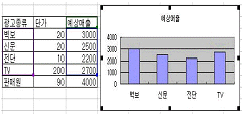
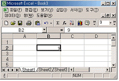
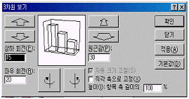
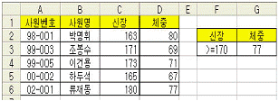
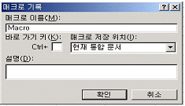
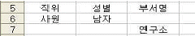
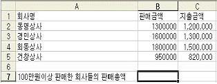

컴퓨터활용능력-2급 (2005-02-20 기출문제)
1과목: 컴퓨터 일반
1. 다음 중 전자우편(E-mail) 사용의 편리한 점이 아닌 것은?
- 동영상, 사운드, 문서 파일 등을 보낼 수 있다.
- 편지가 올바르게 보내졌는지 확인할 수 있으며, 문자를 실시간으로 주고받을 수 있다.
- 전 세계 어디든지 인터넷에 접속할 수 있는 곳이라면 어느 곳에서든 보내고 받을 수 있다.
- 한번에 여러 사람에게 편지를 보낼 수 있다.
(정답률: 76%)

2. 탐색기에서 Temp 폴더의 [등록 정보] 창에 있는 기능을 통해서 할 수 없는 것은?
- Temp 폴더가 포함하고 있는 하위 폴더 및 파일의 개수를 알 수 있다.
- Temp 폴더 아래에 있는 특정 하위 폴더를 삭제할 수 있다.
- Temp 폴더를 네트워크와 연결되어 있는 다른 컴퓨터에서 접근할 수 있도록 공유시킬 수 있다.
- Temp 폴더의 속성을 “읽기전용”으로 설정할 수 있다.
(정답률: 64%)
3. 멀티미디어 필수 장비인 CD-ROM 종류에 관한 설명 중 관계가 먼 것은?
- CD-I : 대화형 CD. 오디오나 TV에 연결하여 멀티미디어를 가능하게 해주는 CD
- CD-R : 한번만 기록 가능한 CD
- CD-RW : 여러 번 읽고 쓰기가 가능한 CD
- CD-G : 그래픽만 저장하기 위한 전용 CD
(정답률: 52%)
4. 다음 문자 코드 중 한 문자가 차지하는 크기가 다른 것은?
- ASCII 코드
- KS X 1001 완성형 한글
- KS X 1001 조합형 한글
- Unicode 2.0
(정답률: 55%)
5. [제어판]의 [글꼴] 항목에 대한 설명으로 다음 중 틀린 것은?
- 글꼴은 일반적으로 ‘C:\WINDOWS\FONTS’에 설치된다.
- 네트워크를 통해서 새로운 글꼴 설치가 가능하다.
- 한번 등록한 글꼴은 삭제가 불가능하다.
- 등록된 글꼴의 모양은 확인이 가능하다.
(정답률: 87%)
6. 다음 중 특정 폴더 내의 모든 파일이나 폴더를 선택하는 단축키는 무엇인가?
- Ctrl + C
- Ctrl + V
- Ctrl + A
- Ctrl + B
(정답률: 85%)
7. 다음 중 [디스플레이 등록 정보] 창에서 할 수 있는 기능이 아닌 것은?
- 바탕 화면 설정
- 화면 보호기 설정
- 작업표시줄 설정
- 화면 해상도 설정
(정답률: 72%)
8. 다음 중 확장자가 .txt인 텍스트 파일을 편집할 수 있는 프로그램이 아닌 것은?
- 그림판
- 워드패드
- 한글 워드프로세서
- 메모장
(정답률: 72%)
9. 최초의 전자계산기 ENIAC에서 사용된 프로그램 방식은?
- 프로그램 내장 방식
- 어셈블리어 방식
- 고급언어 방식
- 외부 프로그램 방식
(정답률: 46%)
10. 메모장에서 저장된 텍스트 문서를 열 때마다 시스템 클럭을 참조하여 현재의 시간과 날짜를 삽입하고자 한다. 다음 중 옳은 것은?
- 문서의 첫 행 맨 왼쪽에 대문자로 .LOG라고 입력한다.
- 메모장의 [삽입]-[시간/날짜]를 이용한다.
- 문서를 작성한 후 [파일]-[인쇄 미리보기]-[시간/날짜]를 이용한다.
- 시스템 트레이에 있는 시간을 마우스 왼쪽 버튼을 이용하여 문서의 원하는 위치에 놓는다.
(정답률: 63%)
11. 다음 중 동영상을 위한 파일 형식이 아닌 것은?
- AVI
- MP3
- MOV
- ASF
(정답률: 76%)
12. 정보 전송 방식중 반이중 방식(Half-Duplex)에 해당하는 것은?
- 라디오
- TV
- 전화
- 무전기
(정답률: 72%)
13. 다음은 탐색기의 기능에 대한 설명으로 가장 적절하지 않은 것은?
- 내 컴퓨터의 정보뿐만 아니라 네트워크 환경, 프린터, 제어판 등의 정보를 제공한다.
- 폴더 옵션을 이용하여 파일 및 폴더 보기 형태를 한 방식으로 통일할 수 있다.
- 폴더 및 파일에 대한 정보뿐만 아니라 열어 본 문서 및 페이지 목록을 제공한다
- 인쇄 기능을 제공하여 문서를 열지 않고 바로 인쇄할 수 있다.
(정답률: 41%)
14. 전화회선을 통해 높은 주파수 대역으로 고속으로 정보를 전송하는 기술로 다운로드와 업로드가 비대칭 구조를 가지며 같은 회선에 음성 데이터와 디지털 데이터를 동시에 보내는 서비스 기술은?
- ISDN
- MODEM
- Codec
- ADSL
(정답률: 51%)
15. 하드디스크를 파티션(Partition) 하고자 할 때 사용되는 명령어는?
- FORMAT
- INSTALL
- FDISK
- MAKE
(정답률: 55%)
16. 다음 중 캐시 메모리(Cache Memory)에서 특정 내용을 찾는 방식 중 매핑 방식에 주로 사용되는 메모리는?
- NANO 메모리
- Associative 메모리
- Virtual 메모리
- Stack 메모리
(정답률: 67%)
17. 다음 중 메일 계정을 설정할 때 필요한 것이 아닌 것은?
- 디지털 서명
- 사용자의 계정 이름
- 송수신 메일 서버
- 메일 서버의 종류
(정답률: 71%)
18. 도스 창에서 작업하다가 윈도우로 복귀하려면 다음 중 어떤 명령을 사용해야 하는가?
- Ctrl + Esc
- Shift + Esc
- Quit
- Exit
(정답률: 63%)
19. 컴퓨터 해킹 용어 중 네트워크 주변을 지나다니는 패킷을 엿보면서 계정과 패스워드 등의 정보를 알아내는 행위를 무엇이라고 하는가?
- 스푸핑(Spoofing)
- 스니핑(Sniffing)
- 트랩 도어(Trap Door)
- DOS(Denial of Service)
(정답률: 64%)
20. 다음 중 컴퓨터를 사용하는 방법에 대한 설명으로 가장 옳지 않는 것은?
- 컴퓨터 사용 도중에 프로그램이 다운되어 작동이 되지 않을 경우에는 콜드 부팅을 하여 재부팅 하는 것이 좋다.
- 웜 부팅은 Ctrl + Alt + Delete 키를 동시에 눌러서 부팅하는 방법이다.
- 실행중인 프로그램을 모두 종료한 후 [시스템 종료]를 선택하여 컴퓨터를 끈다.
- 콜드 부팅을 너무 자주 하면 컴퓨터에 이상이 올 수 있으므로 자주 사용하지 않도록 해야 한다.
(정답률: 49%)
2과목: 스프레드시트 일반
21. 다음 중 부분합에 대한 설명으로 틀린 것은?
- 부분합을 구하기 위해서는 그룹화할 필드의 항목들을 정렬 시킨 후 사용해야 올바른 결과를 얻을 수 있다.
- 특정한 필드를 기준으로 데이터를 분류하고 각 분류별로 합이나 평균 등을 쉽게 계산할 수 있다.
- 부분합을 구하기 전의 원래 데이터로 돌아가기 위해서는 [데이터] 메뉴의 [부분합] 상자에서 [취소] 버튼을 클릭한다.
- [그룹사이에서 페이지 나누기] 옵션을 선택하면 그룹사이에 구분선이 그어져서 부분합이 계산된 그룹을 각 쪽별로 인쇄할 수 있다.
(정답률: 51%)
22. 워크시트에 추가된 내용을 차트에 추가하려고 한다. 적당하지 않은 방법은?

- 추가된 데이터를 범위 지정하여 복사한 다음 차트를 선택하여 차트영역 위에서 붙여넣기 한다.
- 추가된 데이터를 범위 지정하여 차트 영역위로 드래그 한다.
- 차트를 선택하고 단축 메뉴 [원본데이터]-<데이터 범위> 탭에서 데이터 범위를 추가된 부분까지 포함하여 새로 설정한다.
- 새로 추가된 범위를 포함하여 차트를 반드시 다시 작성해야만 가능하다
(정답률: 72%)
23. 다음 중 고급 필터에 관한 설명으로 옳지 않은 것은?
- 필터된 데이터는 다른 시트에도 추출(복사)할 수 있다.
- 필터링 결과는 ‘현재 위치에 필터’하거나 ‘다른 장소에 복사’ 중에서 선택할 수 있다.
- 필터링 전의 원래 데이터를 표시하려면 [데이터]-[필터]-[모두표시]를 선택한다.
- 고급 필터를 사용하려면 먼저 워크시트 상에 조건을 입력한다.
(정답률: 35%)
24. 셀에 #NAME?으로 표현된 것이 있다. 그 이유로 적당한 것은?
- 수를 “0”으로 나눌 때
- 인식할 수 없는 텍스트를 수식에 사용했을 때
- 숫자의 길이가 너무 길어 셀에서 다 표시할 수 없을 때
- 유효하지 않은 셀 참조했을 때
(정답률: 76%)
25. 다음 중 차트에 관한 설명으로 옳지 않은 것은?
- 차트는 차트영역, 그림영역, 계열, 항목 축, 값 축, 범례, 제목 등의 개체로 구성되어 있다.
- F11 키를 누르면 자동적으로 만들어지는 기본형 차트는 2차원 가로 막대형 차트이다.
- 이중 축 혼합형 차트는 세로 막대와 꺽은선 그래프를 함께 표시할 수 있다.
- 계열의 단위가 다르거나, 숫자의 크기가 현저하게 다를 경우에는 이중 축 혼합형 차트를 작성하는 것이 좋다.
(정답률: 66%)
26. -2,265,132 수치에 다음과 같이 사용자 정의 형식을 지정되었을 경우 결과가 틀린 것은?
- 0 , 결과값 : -2265132
- 0.00 , 결과값 : -2265132.00
- #,##0 , 결과값 : -2,265,132
- 0％ , 결과값 : -2265132.00％
(정답률: 48%)
27. 다음은 숫자를 입력할 때 알아두어야 할 사항이다. 잘못된 것은?
- 숫자로 사용될 수 있는 문자에는 0부터 9까지의 수와 + - (, ) , / $ % . E e 가 있다.
- 분수를 날짜로 입력할 수 없게 하려면 0 1/2과 같이 분수 앞에 0을 입력한 뒤 한칸 뛰고 분수를 입력한다.
- 음수 앞에는 - 기호를 입력하거나 괄호로 숫자를 묶는다.
- 일반 숫자 서식은 소수점, “E”와 “+” 기호 등을 포함하여 15자까지 나타낸다.
(정답률: 51%)
28. 고급 필터를 이용하여 원하는 레코드를 검색하려고 할 때, 아래 그림과 같은 메시지가 나타났다. 이러한 메시지가 나타나지 않게 하려면 고급 필터의 옵션 지정시 어느 범위를 충분하게 지정해 주어야 하는가?
- 데이터 범위
- 조건 범위
- 복사 위치
- 참조 영역
(정답률: 53%)
29. [B2] 셀에 9를 입력한 후 셀 서식의 표시형식에서 [B2] 셀에 백분율을 설정하면 [B2] 셀의 값은 어떻게 표시되는가?

- 9
- 0.09
- 900%
- 0.9
(정답률: 64%)
30. 다음은 워크시트에 대한 일반적인 설명이다. 잘못된 것은 어느 것인가?
- 워크시트의 최대 크기는 65,536행, 256열이다.
- 셀에 입력된 수식을 간단히 값으로 변경하려면 해당 셀의 편집 상태에서 F9 키를 누르면 된다.
- Ctrl + F11 키를 누르면 현재 시트의 뒤에 비어 있는 시트가 바로 삽입된다.
- 워크시트의 확대/축소 범위는 10%부터 400%까지이다.
(정답률: 56%)
31. 다음 그림에 대한 설명 중 올바른 것은?

- 차트를 선택하고 단축 메뉴에서 [3차원 보기]를 선택하면 볼 수 있다.
- [기본값] 단추를 누르면 2차원 차트로 변경된다.
- 차트의 회전은 [3차원 보기]를 통해서만 가능하다.
- 막대형 차트에서만 볼 수 있다.
(정답률: 48%)
32. 인쇄나 숨겨진 행/열/필터 등의 설정내용을 저장해 두었다가 효율적으로 활용할 수 있도록 만든 기능은 다음 중 어느 것인가?
- [보기]-[사용자 정의 보기]
- [삽입]-[이름]
- [서식]-[스타일]
- [도구]-[사용자 정의]
(정답률: 49%)
33. 다음 중 데이터 입력에 대한 설명으로 올바른 것은?
- 문자열은 셀의 왼쪽을 기준으로 정렬되며 한 셀 내에서 강제로 줄바꿈하려면 Enter 키를 누르면 된다.
- 숫자를 문자열로 입력해야 하는 경우에는 인용부호(')를 숫자 앞에 붙인다.
- 작성년월 항목에 현재 시스템에 설정되어 있는 오늘 날짜로 자동 입력되게 하려면 Ctrl + Shift + ; 키를 누르면 된다.
- 키보드에 없는 특수문자나 특수기호는 한글의 자음과 [한/영] 키를 이용하여 입력할 수 있다.
(정답률: 58%)
34. 신장이 170 이상인 사원 중에서 가장 높은 체중을 구하려고 한다. 다음 [G3] 셀에 입력할 수식으로 올바른 것은?

- =DMAX($A$1:$D$6,F2:F3)
- =DMAX($A$2:$D$6,4,F2:F3)
- =DMAX($A$1:$D$6,4,F2:F3)
- =MAX($A$2:$D$6,3,F2:F3)
(정답률: 55%)
35. 다음은 어떤 함수에 대한 설명이다. 이 함수는 어느 것인가?(표의 가장 왼쪽 열에서 특정 값을 찾아, 지정한 열에서 같은 행에 있는 값을 표시한다.)
- IF
- VLOOKUP
- HLOOKUP
- MAX
(정답률: 62%)
36. 다음 중 아래의 [매크로 기록] 대화 상자에 대한 설명으로 옳지 않은 것은?

- 매크로 이름에는 +, -, & , ? 와 같은 특수 문자는 포함될 수 없다.
- 바로 가기 키에는 대문자는 사용할 수 없다.
- 매크로 저장 위치는 매크로를 저장할 위치를 설정하는 것으로 ‘개인용 매크로 통합 문서’, ‘새 통합 문서’, ‘현재 통합 문서’ 중에서 선택할 수 있다.
- 설명은 기록하지 않아도 되며, 소스에서는 주석으로 표시된다.
(정답률: 74%)
37. 다음 중 화면 제어 방법에 대한 설명으로 옳지 않은 것은?
- 창 나누기는 워크 시트를 여러 개의 창으로 분리하는 기능으로 화면은 최대 4개로 분할할 수 있다.
- 창 나누기를 위해서는 셀 포인터를 창을 나눌 기준 위치로 옮긴 후, [창]-[나누기]를 클릭하면 셀 포인터의 위치를 기준으로 화면을 수평/수직으로 분할해 준다.
- 틀 고정은 특정한 범위의 열 또는 행을 고정시켜 셀 포인터의 이동에 관계없이 화면에 항상 표시하고자 할 때 설정한다.
- 통합 문서 창을 [창]-[숨기기]를 이용하여 숨긴 채로 엑셀을 종료하면 다음에 파일을 열 때 숨겨진 창에 대해 숨기기 취소를 할 수 없으므로 주의하여야 한다.
(정답률: 66%)
38. 다음 중 매크로에 대한 설명으로 옳지 않은 것은?
- 매크로 이름의 첫 글자는 반드시 문자이여야 하며 나머지는 문자, 숫자, 밑줄 등을 혼합하여 사용할 수 있다.
- [새 매크로 기록]시 이미 존재하는 매크로명이 있으면 기존 매크로명을 바꿀지 여부를 확인한다.
- 매크로 실행의 바로 가기 키가 엑셀의 바로 가기 키보다 우선이다.
- 매크로의 이름에는 공백을 포함할 수 있다.
(정답률: 75%)
39. 고급 필터에서 다음과 같은 조건을 설정하면 어떤 결과가 나타나는가?

- 직위가 사원이면서 성별이 남자이거나 부서명이 연구소인 데이터가 추출 된다.
- 직위가 사원이거나 성별이 남자이면서 부서명이 연구소인 데이터가 추출 된다.
- 직위가 사원이거나 성별이 남자이거나 부서명이 연구소인 데이터가 추출 된다.
- 직위가 사원이면서 성별이 남자이면서 부서명이 연구소인 데이터가 추출 된다.
(정답률: 73%)
40. 다음에서 100만원이상 판매한 회사들의 판매금액에 대한 판매총액을 구하고자 한다. 가장 알맞은 함수식은?

- =SUMIF(B2:B5,“>=1,000,000”)
- =SUMIF(C2:C5,“>=1,000,000”)
- =SUMIF(B2:C5,“>=1,000,000”)
- =SUM(B2:B5,“>=1,000,000”)
(정답률: 67%)